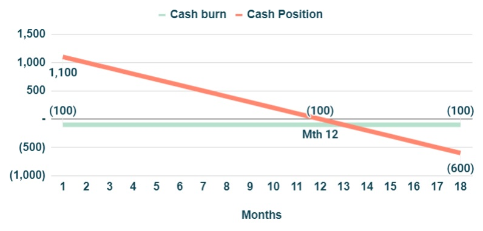
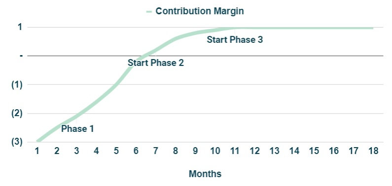
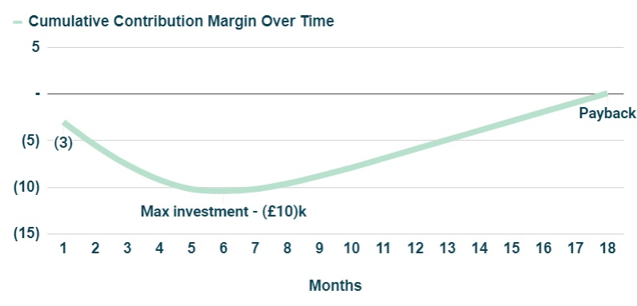
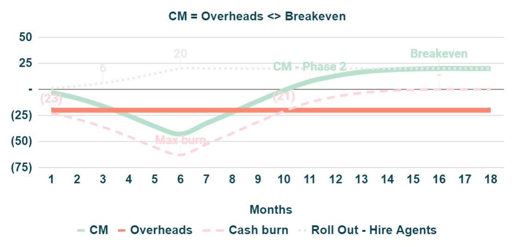
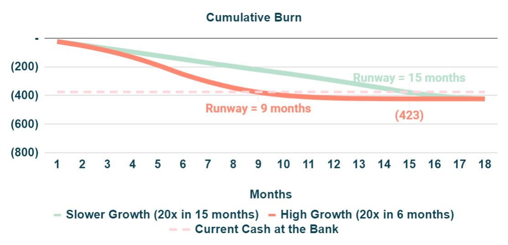
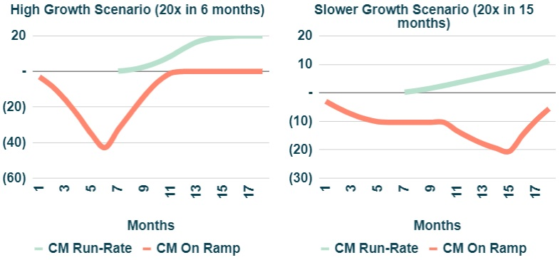

Summary
In mid 2022, we are experiencing difficult capital markets conditions, where access to new capital will likely to be constrained in the near term. In such an environment, it is wise to extend runway and target profitability sooner. This note explains why this can be achieved through a combination of lower growth and a reduction of Overheads.
Runway > Run out of Cash
Runway is defined as how long can a Company operate until it runs out of cash and is usually expressed in months. The implied assumption is that Cashflows, i.e. the difference between revenues and costs, are negative and therefore operations are being funded by cash at the bank.
Figure 1: Cashflows.For example, if a company has £1.2m of cash and is burning £100k per month its runway is 12 months.
Cashflows > Contribution Margin (CM) plus Overheads
In order to link Cashflows with the operations of a Company, in a way that non-finance people can relate to, in their day to day activities, it is very helpful to break it down in a slightly different way: Contribution Margin and Overheads.
 Figure 2: Cashflows = CM + Overheads.Contribution Margin (CM) is calculated as revenues net of CM costs. These are costs that a Company needs to incur in order to generate revenues, so they grow in line with sales. It can either be a cash inflow (if positive when revenues cover CM costs) or cash outflow (if negative).
Overheads are all other cash outs that the Company pays, regardless of the revenues generated. Over time, its growth should decouple from sales. This component is always negative (i.e. a cash outflow).
When a Company is burning cash ("cash burn") it means that Cashflows are negative (i.e. CM+Overheads<0)
Contribution Margin Over Time and Breakeven
There are typically three phases for CM in a high growth startup:
- Phase #1 (CM<0) - because it takes some time for revenues to ramp up while costs start to be incurred from day one (e.g. hire a sales team - salaries are paid day one but revenues may only start to be generated in month six), CM is initially negative and progressively trends towards zero. Cash burn is at its maximum.
- Phase #2 (CM positive) - revenues keep ramping up and CM becomes increasingly positive. Cash burn reduces.
- Phase #3 (CM at run-rate) - revenues cannot increase any longer without increasing further CM costs, as a consequence CM plateaus. Cash burn is minimised.
To illustrate this, let’s consider a hypothetical Company with a sales team of just one person. The salary of that person is always (£1k) per month and there are some one-off costs between (£1-2k) each month for the first 6 months. Given the way this specific industry works, it takes 6 months to generate sales and on a run-rate basis the Agent can generate £2k of sales per month.
 Figure 3: Contribution Margin Phases #1/#2/#3.- Phase #1 - CM starts at (£3k) and as one-off costs elapse and revenues start to ramp up, it takes c. 6 months to achieve CM=0.
- Phase #2 - From month 6 onwards, revenues keep ramping up and by month ~11 the agent is now generating £2k of revenues per month. CM increases towards £1k.
- Phase #3 - From month 11 onwards, the agent is not able to bring in more revenues, CM is now at its run-rate level of £1k per month (£2k revenues net of £1k salary).
In the figure below, it is shown an example for the overall cash burn assuming (£20k) of Overheads. At the start of Phase 1 burn is at its maximum (£23k), it then reduces to (£20k) in Phase 2 and finally plateaus at (£19k) in Phase 3. Figure 4: Cash burn as CM goes through Phases #1/#2/#3. It is important to notice that a run-rate CM of £1k is not sufficient to cover (£20k) of Overheads. Further growth or a Overheads reduction is necessary for the Company to hit breakeven (this means that Contribution Margin inflows match outflows for Overheads and therefore no cash is burn).
Investing For Growth > Maximum Investment and Payback Period
While CM is negative, the Company needs to fund the cash outflow from cash at the bank. The time period required to hit CM=0 will determine what is the maximum investment necessary to grow the business - in this case it was £10k at month 7.
 Figure 5: Total Investment and Payback period.Another important parameter is how long it takes to recover the initial investment, ie the payback period. Given that the run-rate CM is £1k it should take another ~10 months to fully recover the £10k investment, so overall, there is cash “tied-up” to grow the business for ~18 months. This is what it means to invest for growth - the higher the growth, the more cash will be necessary to fund the incremental burn due to the negative CM period during Phase 1.
What is required operationally to achieve breakeven?
If Overheads are (£20k) and run-rate CM is £1k, the Company needs to grow CM to £20k and hire in total 20 Agents in order to breakeven. The maximum investment per Agent is £10k, hence the investment for growth will be less than £200k (20x£10k), as it will take several months to hire all the Agents. If it takes ~18 months to fully recover the investment, up to ~£360k (18x£20k) would be required to cover Overheads for this period. So overall, the total funding required to achieve positive cash flows should be less than £560k (£200k for growth and £360k for Overheads).
This amount can then be compared with the current cash position at the bank to assess how feasible it is to achieve this milestone. For example, if cash available was £240k, runway would be less than 12 months (£240k / £20k Overheads) and therefore it would not have enough time to hit breakeven.
Below is an example for a High Growth scenario where the 20 Agents are hired over a 6 months period. As it takes ~11 months for an Agent to be fully ramped up (£1k CM), breakeven is achieved by month ~17.
 Figure 6: CM and Overheads over time.How does growth impact the runway?
Lets consider the cumulative cash burn for two scenarios, where the Company has £375k cash at the bank.
- Scenario #1 (slow growth)- hire 20 Agents in 12 months @ 1-2 per month
- Scenario #2 (high growth) - hire 20 Agents in 6 months @ 1-5 per month (same as previous section)
The first conclusion is that growth increases burn in the short term (red line is to the left of the green line), because more cash is required to invest for growth (CM<0 period), and reduces the total funding requirement (£423k vs £482k) as a consequence of hitting breakeven sooner. Another consequence is that for the same cash at the bank amount (£375k) the runway will be shortened - in the high growth scenario this is ~9mths vs ~12 months in the slow growth scenario.
In short, there is always a trade-off between growth and runway. Higher growth implies a shorter runway.
How to think about runway vs capital markets conditions?
During normal capital markets conditions, when there is plenty of money from investors, startups will typically go for higher growth (if they can…) because there is little risk of not being able to raise additional money in the future to extend the runway. During capital market conditions like those experienced from mid 2022, where access to new money is likely to be constrained for a significant time period, it is wise to extend the runway as much as possible. This can be achieved through a combination of lower growth and a reduction of Overheads. As per the example below for a Slower Growth scenario (red line = hire 20 Agents in 15 months and reduce Overheads by 25%), runway was extended from 9 months to 15 months while the cumulative burn (total funding requirement) remained the same (£423k).
 Figure 8: Impact of growth and Overheads in runway.Why did this happen? Obviously if less money is being spent on overheads, runway will be extended. However, the other side of the coin is that in the High Growth scenario (20 hires in 6 months) there is a big mismatch between the investing cash for growth and starting to generate positive CM from those investments (see red line vs green line on the picture on the left). In the Slower Growth scenario (20 hires in 15 months), the initial investment is not as steep and from month ~15 ownards, the cash generated from a fully on-ramped Agent over two months (£10k), is sufficient to recover 100% of the investment of launching one new Agent (£10k). Cash in from older investments can thus be used to fund the cash investment in new Agents - growth becomes very sustainable with no material cashburn.
 Figure 9: CM split between growth (CM<0) and run-rate (>0).Note that profit is not the same as cashflows - topic to be covered in a future note.
If I can be helpful on anything, or if you have any comments or suggestions,
please do reach out: